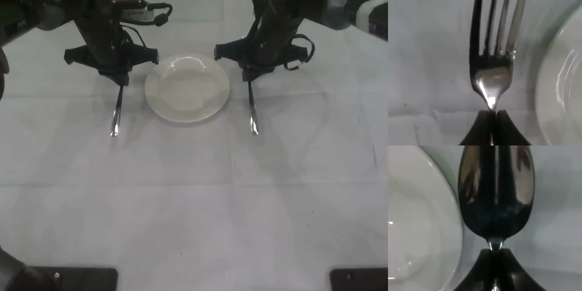

RoboSynChallenge
I built the PiPER deployment and evaluation platform for all ten bimanual tasks. It connects three RGB cameras, 14-dimensional robot state and policy inference to the arms. Synchronized video and joint logs let us trace failures back to individual actions.
I led the pipette policy, using the learned policy for grasping and approach, then switching to tracking and alignment for the final press. Our entry ranked first on this task by overall score, with 84 successes in 100 official simulation trials.

- 3 / 47
- Team · simulation preliminaries
- 1st
- Pipette · task score